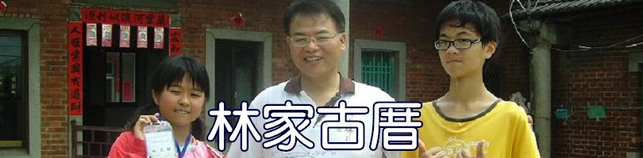
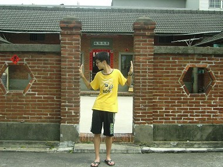
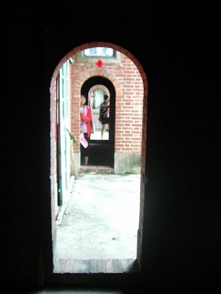
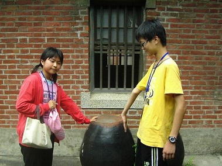

林家古厝 林家古厝是一處五合院，是由四個兄弟組成，一個兄弟一間古厝，第一間是原本的住宅，第二至五間是老大至老么按照順序的住處，
看到碩果僅存的五合院我也不禁拍起了幾張藝術照    
 這 次的踏查，讓我們見識到了不單單只是古物的保存甚至到農村人的心血結晶，還有對所有事物的堅持，現今的社會中對於古建築越來越有所重視..因為它們是我們 生活中最不可或缺一最能沉澱心靈的場所，不管經歷任何風雨，都希望未來的不管40年50年甚至一甲子，都能夠看到它最完整的面貌：）
|
||||||||||||||
彰化縣立線西國民中學、未來想像與創意人才培育計畫：黃巧婷、丁于容、姚家臻、顏劭勳 製作 |